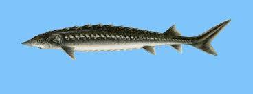
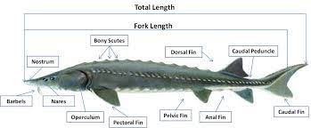

Os peixes da família Acipenseridae, também conhecidos pelo nome esturjão, compõe uma das famílias mais antigas de peixes ósseos existentes.
Natívos de lagos e rios de grande dimensão da Europa Central, estes peixes são suspeitos de serem responsáveis por certos mitos e lendas populares.
Os esturjões são cartilaginosos carecendo de um centrum vertebral e coberto por placas ósseas, também chamadas de escúdos córneos, em vez de escamas que é uma característica típica de peixes
anatomía relativamente próxima à dos seus antepassados pré estóricos.
Outro peixe que possui tal característica é o arapaima, espécie típica de rios tropicais como o amazonas.
Eles também possuem quatro “bigodes” - órgãos táteis que precedem a boca desprovida de dentes e que são atritados contra o fundo frequentemente turvo dos rios.

O esturjão é encontrado nas águas subtropicais e sub-árticas da América do Norte e da Eurásia.
Na América do Norte pode ser encontrado em rios e lagos ao longo da costa atlântica desde o Golfo do México até à Terra Nova
Nas zonas mais interiores da américa do norte, o esturjão é nativo dos grandes lagos e rios como:
Típicamente o esturjão pode ser encontrado, ao longo do território europeu, nas regiões banhadas pelo oceano Atlântico e mar Mediterrâneo,
paricularmente nos rios que desaguam nos mares Negro, Azov e Cáspio como;
Encontrados também em certas regiões da do Norte da Rússia, como certos rios que desaguam no Oceano Ártico tais como:
| Espécie | Comprimento | Peso | Dieta |
|---|---|---|---|
| Beluga | ~6m | >1000Gg | Único esturjão Carnívoro |
| Ossetra | ~1.2m | ~80Kg | Omnívoro |
| Sevruga | ~1.6m | ~25Kg | Crustáceos |
| Schrencki | ~2m | ~100Kg | Crustáceos |
| Baeri | ~3m | ~30kg | Crustáceos |
| Estrorjão Branco | ~4m | ~200Kg | Crustáceos |